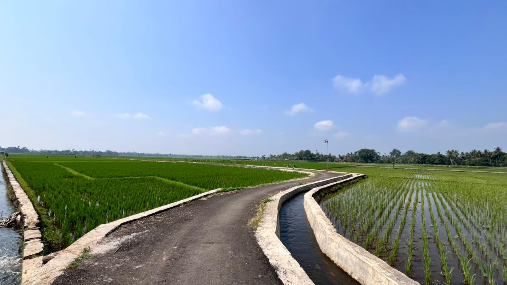

Potensi Desa

Pertanian
Sektor pertanian di Sidakangen merupakan kegiatan masyarakat dalam mengelola lahan untuk menghasilkan bahan pangan seperti padi, sayuran, dan palawija. Sektor ini menjadi sumber mata pencaharian utama warga desa.

UMKM Digital
Rumah Digital Sidakangen merupakan produk UMKM di bidang layanan digital. Menyediakan layanan teknologi yang mendukung kebutuhan masyarakat sekaligus meningkatkan perekonomian kreatif lokal.